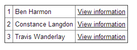
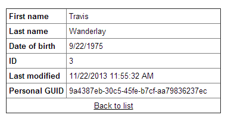
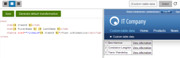

Writing transformations for custom tables
When displaying data from custom tables on your website, use transformations to define the format of the output.
The scenario below shows examples of transformations applied to custom table data.
Example prerequisites
To follow the example, you need to:
Create the People custom table according to the instructions in Creating custom tables
Add data to the table as described in Managing custom table data
Setting up the custom table web part
Start by preparing a page that loads and renders data from the custom table:
Open the Pages application.
Select the page where you want to display the custom table data.
Open the Design tab.
Add the Custom table repeater web part onto the page.
Set the following properties for the web part:
Custom table: People
Selected item querystring key: itemid
Selected item database column name: ItemID
Selected item validation type: Validation by number
HTML envelope -> Content before:
<tableborder="1"cellpadding="4"style="border-collapse:collapse">HTML envelope -> Content after:
</table>
Click OK.
The web part does not display any data for now, because you have not assigned transformations. The HTML envelope properties add a table element around the web part. The transformations created in the next sections will fill the content of the table.
To learn more about setting up custom table web parts, see Displaying data from custom tables.
Writing the list transformation
The purpose of list transformations is to display multiple items on the same page. The Custom table repeater applies the list transformation to every record loaded from the specified custom table. In this example, the "list" is composed of table rows.
In the Pages application, configure (double-click) the Custom table repeater web part (on the Design tab).
Click New next to the Transformation property. The New transformation dialog opens.
Change the Class type to Custom table and select People as the Custom table value.
Type ListItem as the Transformation name.
Change the Transformation type to Text / XML.
Copy the following code into the transformation editor:
<tr><td>{% ItemID %}</td><td>{% FirstName %} {% LastName %}</td><td><ahref="?itemid={% ItemID %}">View information</a></td></tr>Click Save and close the dialog.
Click OK to confirm and close the Web part properties dialog.
The transformation defines a table row, which the repeater renders for every record in the People custom table. If you view the page on the live site, you can see the custom table's data.

A table containing records from the 'People' custom table
Writing the detail transformation
To allow users to view more information about individual people from the custom table, you need to create a second transformation for the detail view:
In the Pages application, configure (double-click) the Custom table repeater web part again.
Click New next to the Selected item transformation property. The New transformation dialog opens.
Change the Class type to Custom table and select People as the Custom table value.
Type ItemDetails as the Transformation name.
Change the Transformation type to Text / XML.
Copy the following code into the transformation editor:
<tr><td><strong>First name</strong></td><td style="width:250px;">{% FirstName %}</td></tr><tr><td><strong>Last name</strong></td><td>{% LastName %}</td></tr><tr><td><strong>Date of birth</strong></td><td>{% DateOfBirth.ToShortDateString() %}</td></tr><tr><td><strong>ID</strong></td><td>{% ItemID %}</td></tr><tr><td><strong>Last modified</strong></td><td>{% ItemModifiedWhen %}</td></tr><tr><td><strong>Personal GUID</strong></td><td>{% ItemGUID %}</td></tr><tr><td colspan="2"style="text-align:center;"><a href="{% CurrentDocument.RelativeURL %}">Back to list</a></td></tr>Save the transformation and close the dialog.
Click OK to confirm and close the Web part properties dialog.
The Custom table repeater applies the detail transformations when a single record is selected via a URL parameter.
On the live site, you can now click the View information link next to individual people in the list. The table changes and displays the data of the selected person.

Detail view showing the values of a specific custom table record
Tip - previewing transformations
When editing the code of transformations that are already assigned to a web part, you can preview the output directly. Click Preview in the dialog header. The editor opens a split view, where you can see how the content displayed by the web part changes when you save the transformation code.

Previewing a transformation's output on the page